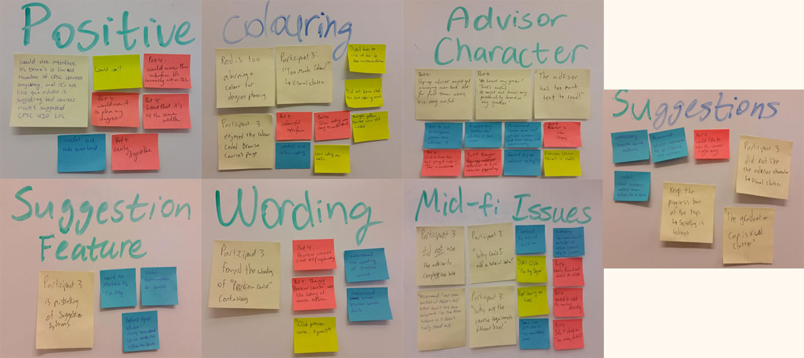

by our collective frustration with the current UBC Course Registration
website. The system required students to open multiple windows to
figure out which course to take. We wanted to create an improved
registration process that would allow students to plan their degree
in an organized manner. As the lead designer, I decided to use
Axure because it excels at prototyping complex interactions.
OVERVIEW
REQUIREMENTS
From our task examples and previous knowledge, we generated a list of requirements for the new/improved functionality that our interface was going to support.
- Allow users to see if planned courses move them closer to graduation.
- Allow users to view which courses are exempt due to transfer from different institution.
- Allow users to see how changing their program will impact their projected graduation date.
- Present a list of potential courses to take based on courses taken and major requirements.
APPROACH
We conducted research (interviews, observation, questionnaires) on the students of UBC to find out about their difficulties and needs when choosing their courses. With the data we gathered, we analyzed by doing an affinity diagramming activity, created personas as well as journey maps. This activity helped us understand the users better which would in turn helped us design a better solution for them.
MY ROLE
Everyone participated throughout the research process until we arrived at the design section of medium fidelity prototype. During the research phase, I took charge in creating personas, wireframes, userflow and the journey maps of our potential users. I took charge of creating the medium fidelity prototype designs for the UBC website using Axure. I received feedback from my teammates and participants and improved the design accordingly. I chose Axure as it was interactive and we could run test our prototype immediately.
DURATION
September 2015 - December 2015
TOOL
Axure
TEAM
Vanessa J. Wan | Branden Siegle | Angela Chen | Liam Hewitt
PROCESS
RESEARCH
We sent out questionnaires to find out what were the main problems the students were facing when choosing their courses. This helped us explore the different problems they face at the beginning and end of each term.
Once we were able to narrow down the problem areas, we conducted open-ended (unstructured) interviews and gave them a task to do in order to observe how they usually choose and add their courses to their worklist. We asked them to tell us what they were thinking (think-aloud) while doing the task in order to know what caused them some frustrations. After they were done, we asked some follow-up questions for more insight on their specific actions and emotions.
Once we were able to narrow down the problem areas, we conducted open-ended (unstructured) interviews and gave them a task to do in order to observe how they usually choose and add their courses to their worklist. We asked them to tell us what they were thinking (think-aloud) while doing the task in order to know what caused them some frustrations. After they were done, we asked some follow-up questions for more insight on their specific actions and emotions.
{kind=link}
PROBLEMS
-
From the survey results, we can see that respondents:
- definitely feel the need to see their advisor when they are planning their degree
- have trouble finding their degree requirements at times
- feel that the current version of the SSC is lacking tools to determine their degree progress
STORYBOARD
{kind=link}
TASK EXAMPLES
We created task examples that illustrate the tasks and stakeholders (needs and characteristics) that were important for our interface to support.
{kind=link}
{kind=link}
BRAINSTORMING
In our initial brainstorming session, we posed design ideas as questions and then went deeper.
We narrowed our metaphors down to: advisor, shopping cart, and budget. The advisor is like an academic advisor who can help users choose which courses will help them get closer to graduation. Users can add all the required courses for the semester into a “shopping cart” (worklist) and then “check-out” (register for the courses). Users can also see if the courses in the cart will balance overall like a budget.
We narrowed our metaphors down to: advisor, shopping cart, and budget. The advisor is like an academic advisor who can help users choose which courses will help them get closer to graduation. Users can add all the required courses for the semester into a “shopping cart” (worklist) and then “check-out” (register for the courses). Users can also see if the courses in the cart will balance overall like a budget.
PAPER PROTOTYPING
The purpose of prototyping was to determine if our conceptual model made sense to the user and to see how well it matched to the user’s mental model. We did this because we had several questions that we wanted to answer before we moved on to a medium fidelity prototype:
- How do users respond to a virtual advisor being a character they can interact with?
- Do students find the feature of having courses suggested useful?
- Do the suggestions by the virtual advisor make it easier to complete requirements?
- Are users able to easily navigate around our interface?
- Will users understand how to apply their desired courses to their degree requirements?
- Will students with transfer credits easily be able to see how that credit impacts their progress?
Low Fidelity Prototype DEMO
DESIGN & DEVELOPMENT
I took charge in designing the UI of the website. I chose Axure as a prototyping platform as it was cheap, easy, and fun to learn and use. Since our participants were all Computer Science students, I designed the interface that generally fit their profile so that they could easily familiarize themselves with the prototype. I created a fake set of courses where some have been completed, were in progress, and not yet completed.
Progress bars were designed so that degree progress could be viewed at a glance. The progress bar consists of 3 parts that correspond with the fake set of courses. I colour-coded them in reference to traffic lights to make it easier for users to remember the meaning of each colour. I have made the progress bar look like buttons in order to afford clicking of the mouse and hovering (to view grades) of the mouse pointer. This also clearly separates one course from another but at the same time preserves the aspect of a progress bar.
As for the list of courses that could not fit in one progress bar, I decided to make the progress bar expandable so as to compress the list of courses in one pane. I used the Advisor's graduation cap to bring the user's attention to a red bar (i.e, not yet completed requirement) to show that the Advisor has course suggestions. When previewing the course, I used a blue colour to show the changes when adding the course to their degree.
Progress bars were designed so that degree progress could be viewed at a glance. The progress bar consists of 3 parts that correspond with the fake set of courses. I colour-coded them in reference to traffic lights to make it easier for users to remember the meaning of each colour. I have made the progress bar look like buttons in order to afford clicking of the mouse and hovering (to view grades) of the mouse pointer. This also clearly separates one course from another but at the same time preserves the aspect of a progress bar.
As for the list of courses that could not fit in one progress bar, I decided to make the progress bar expandable so as to compress the list of courses in one pane. I used the Advisor's graduation cap to bring the user's attention to a red bar (i.e, not yet completed requirement) to show that the Advisor has course suggestions. When previewing the course, I used a blue colour to show the changes when adding the course to their degree.
Medium Fidelity Prototype DEMO
USER TESTING
From the questionnaire we were able to recruit four participants for our study. They were all undergraduate Computer Science students with at least one year left in their degree. We observed them as they completed the task of selecting a 300-level CPSC elective course that would fulfill their degree requirements using our prototype while thinking aloud.
We then came together as a team to form affinity diagrams. We were able to draw common patterns and themes from the diagrams for qualitative analysis and determine the outcomes of our evaluation goals.

We then came together as a team to form affinity diagrams. We were able to draw common patterns and themes from the diagrams for qualitative analysis and determine the outcomes of our evaluation goals.
{kind=link}
DESIGN ITERATIONS
After taking into account of the feedback received, I have re-designed the website:
- I placed every thing in one page since our goal was to avoid opening multiple pages to avoid confusion.
- I combined all the courses in a list/table where the user can see at a glance the courses they have taken, the courses they are currently taking and the courses they have yet to complete/choose.
- Some users found it hard to understand the meaning of "Preview course", so I removed the button and replaced it with clickable courses. When you click on a course, it applies the changes immediately by changing to blue.
- It was hard for some users to identify what was clickable or not. I designed the table cells to seem clickable and to highlight when hovered on.
- I omitted the Clippy-like character and replaced it with an explanation bubble to give it a more professional layout.
What I learned
This course helped me reinforce my passion for UX/UI Design. Taking this course helped strengthen my ideation skills in a collaborative environment. It also has taught me that designers are not always right about how users think therefore testing is a very important part of designing an interface.